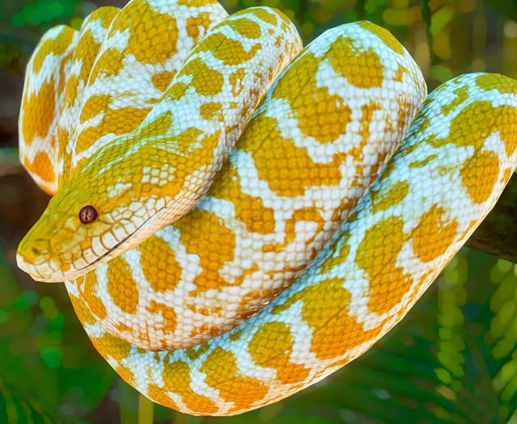

Sarı piton, Güneydoğu Asya kökenli ve dünyanın en büyük yılan türlerinden biri olan pitonların albino varyasyonu olarak bilinir; parlak sarı ve beyaz desenli derisiyle dikkat çeker, iri ve kaslı yapısı sayesinde avlarını zehir kullanmadan boğarak etkisiz hale getirir; ortalama 20–30 yıl yaşar ve 5–7 metre uzunluğa, 70–100 kg ağırlığa ulaşabilir; geceleri aktif olan bu tür, kuşlar, kemirgenler ve küçük memelilerle beslenir; yumurtlayarak çoğalır ve dişiler yumurtaları vücut ısısıyla korur; insanlar için genellikle saldırgan değildir ancak iri yapısı nedeniyle dikkatle yaklaşılması gerekir; egzotik görünümü sayesinde dünyanın birçok yerinde terraryumlarda beslenmekte, kültürel açıdan ise güç, gizem ve doğanın dengesiyle ilişkilendirilen bir sembol olarak görülmektedir.